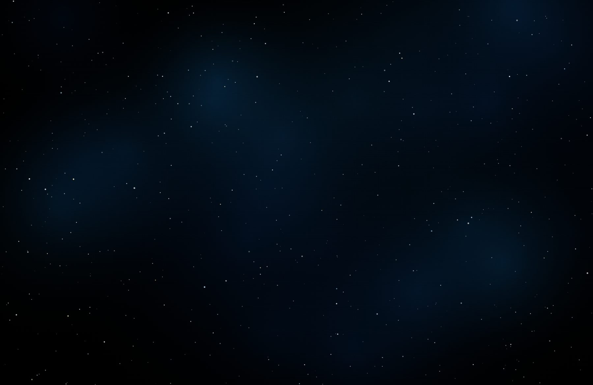

For the Public · Public events
SPACE::TALK
A meetup on space research and engineering, held five times a year on a Thursday evening at SPACE::LAB, Bulharská 2, Košice. Interactive talks by leading Slovak experts, with time to ask questions and meet people working in the field. Talks are held in Slovak.
Archive
36 past talks
Newest first. Titles and speaker notes stay in Slovak, as the talks are held.